AgentCraft contribution evidence
AgentCraft contribution evidence
Sixteen real Minecraft captures from the isolated integration studio and
the existing survival world. Numbered overlays identify controls and
visible changes; click an image to inspect the untouched original.
These captures show rendered setup, interaction and recovery states.
Keyboard sequences, save readback and restart persistence are separately
reported runtime observations; a screenshot cannot prove them. JVM
mouse-handler tests cover dispatch; native pointer automation did not
establish physical clicks. See
qualification notes and
mouse verification limits. The
contribution notes describe backend and preservation checks.
CLI and model discovery
The screenshot displays detected standalone CLI versions and setup
presets. First-connection detection is reported in the qualification
notes; model availability depends on the host CLI and account.
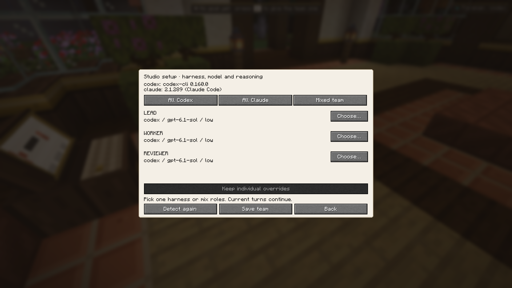
123
- Detected CLI versions
- Single-harness and mixed presets
- Explicit Save team action
One harness for every role
The all-Claude preset is an unsaved draft until the owner saves it.
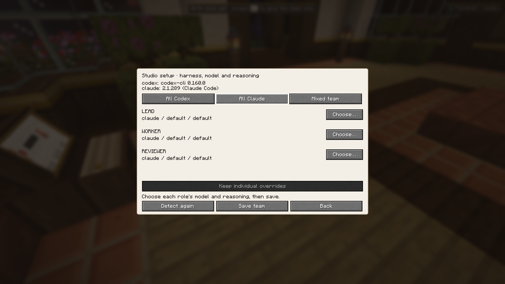
12
- Lead, worker and reviewer use Claude
- Individual overrides are preserved by default
Codex model and reasoning
Available models come from the installed CLI catalog. GPT-6.1-Sol is
selected with high reasoning.
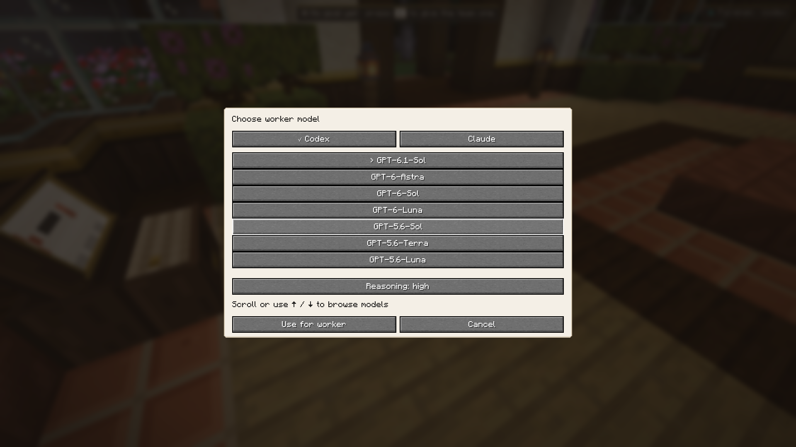
12
- CLI model catalog
- Supported reasoning levels
Claude model and reasoning
The same setup flow supports Claude. Sonnet is selected with high
reasoning for review.
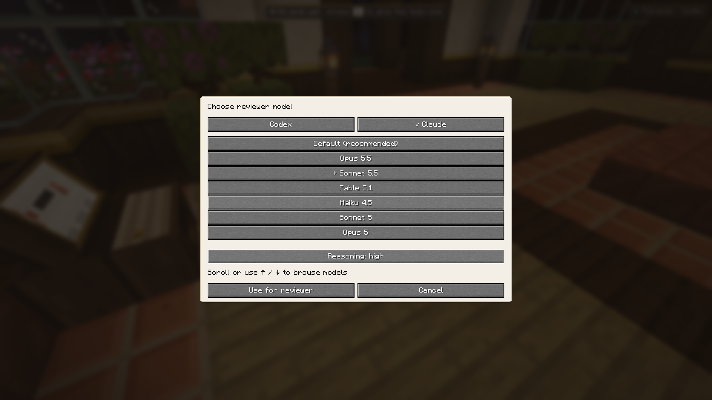
123
- Harness selector
- Claude model catalog
- Reasoning choice
Mixed team saved in Minecraft
The screenshot shows Astra/medium for lead, GPT-6.1/high for workers,
Claude Sonnet/high for review and the saved-state message. Exact readback
and persistence after Foreman restart were reported separately by the
integration lead.
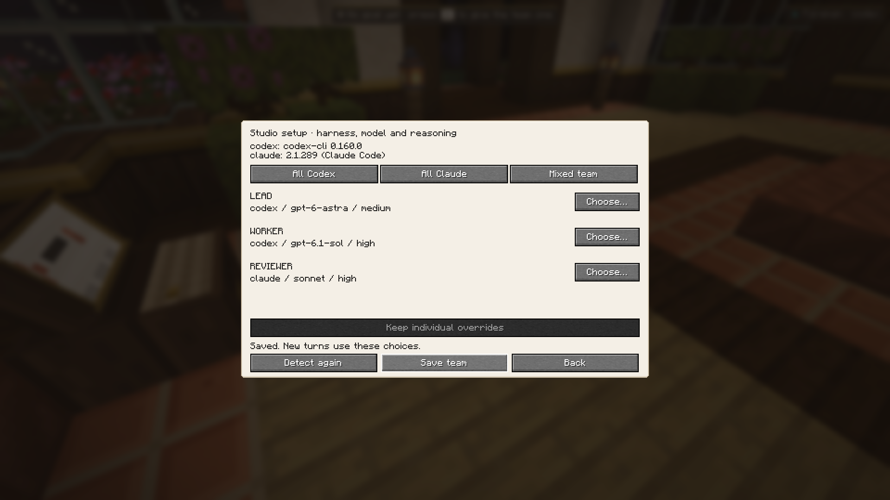
123
- Codex lead and worker selections
- Claude reviewer selection
- Confirmed saved state
Per-agent model settings
The individual model selector displays current-turn state and next-turn
settings separately. This earlier capture predates the keyboard shortcut
labels; the next section shows the updated controls.
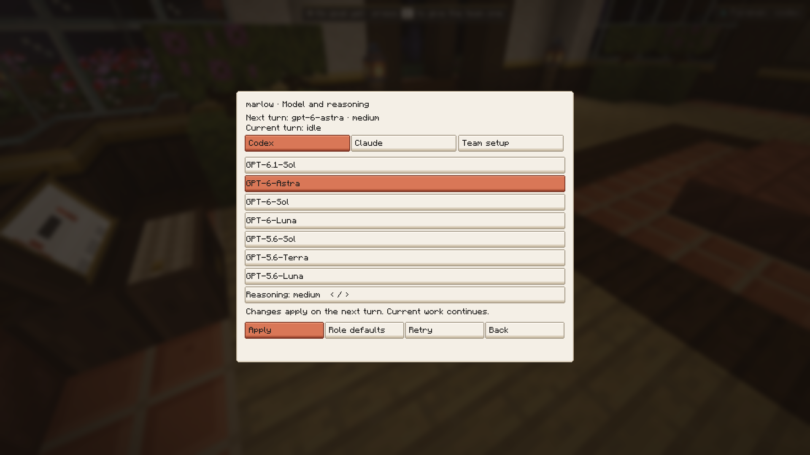
123
- Current and next turn
- Harness and team controls
- Apply or restore role defaults
Per-agent model controls
Marlow’s saved next turn remains Astra with medium reasoning. Provider,
team, defaults and retry controls have visible keyboard shortcuts.
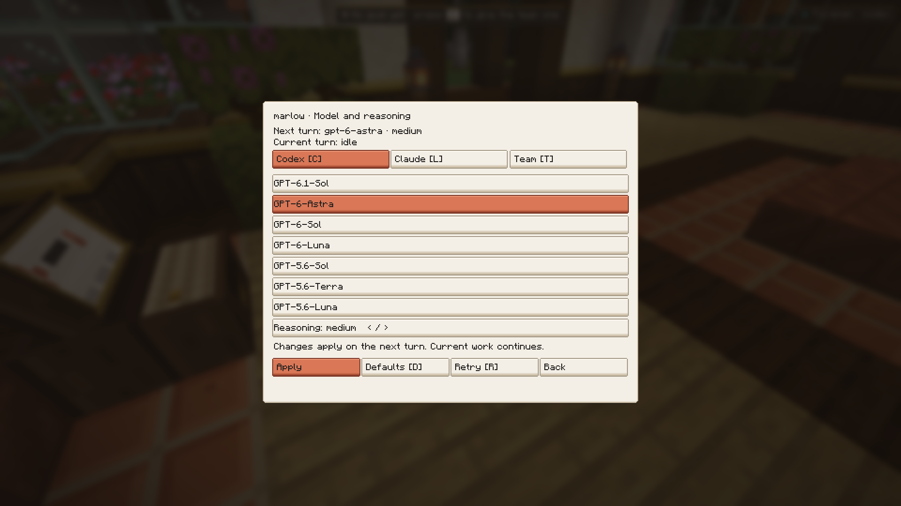
123
- Saved next-turn selection
- Provider and team controls
- Apply is explicit
Claude preview without changing the agent
The Claude catalog is available in the same selector. Opening this preview
leaves the saved Codex selection unchanged until Apply.
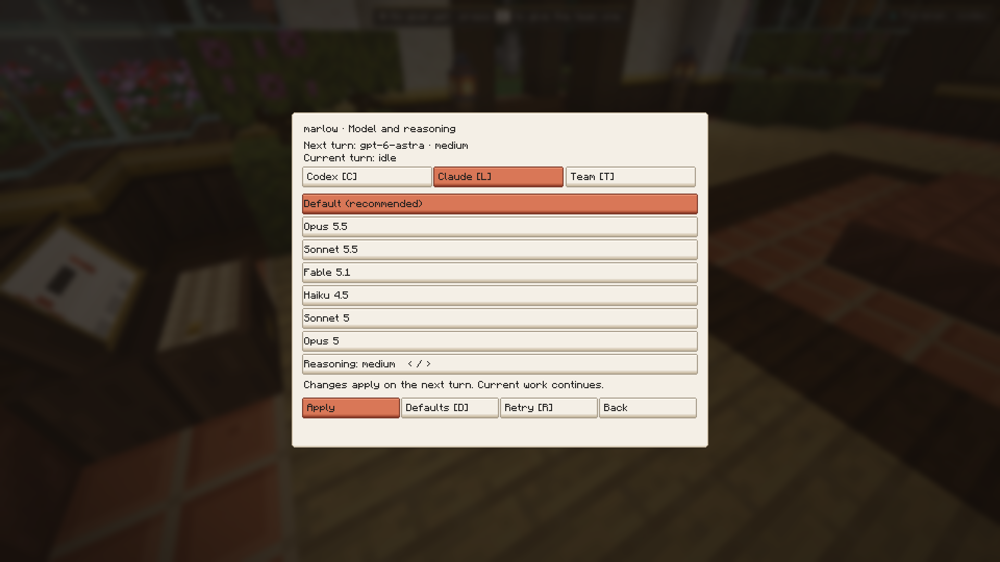
123
- Saved Codex choice remains unchanged
- Detected Claude catalog
- Reasoning selection
Conversation without an accidental goal
A plain message sent from the Minecraft console received Marlow’s
greeting. Foreman readback confirmed zero goals and zero tasks. Use /goal
when asking the team to start work.
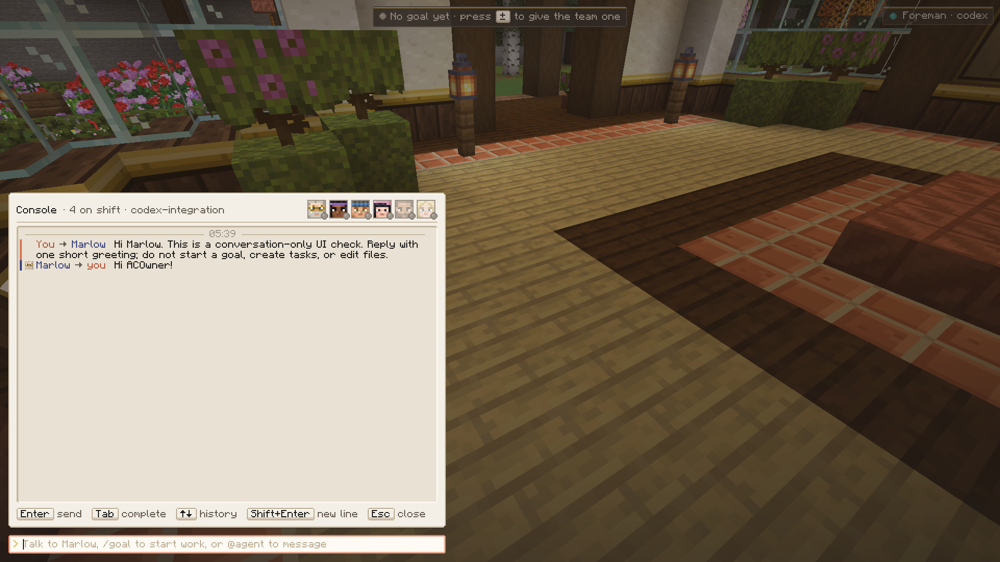
12
- Conversation appears in the console
- Plain text routes to Marlow
Notch clearance and shader compatibility
The original survival world was rejoined at the saved position with the
existing shader configuration. The top-center panel sits below the display
edge; this captured frame has none of the earlier stretched triangles.
This is a visual check, not a performance benchmark.
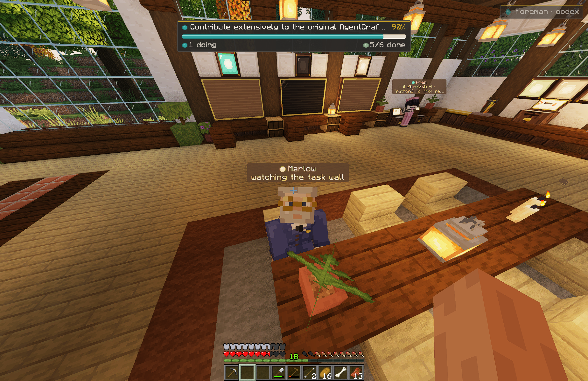
12
- Lowered top-center HUD
- Rendered world and NPC geometry
A guest joins without client mods
A plain Minecraft 26.3 client joined the loopback integration server and
rendered the studio using vanilla block equivalents. The client manifest
has no mod loader. This capture uses an offline test account and does not
establish a second authenticated player session.
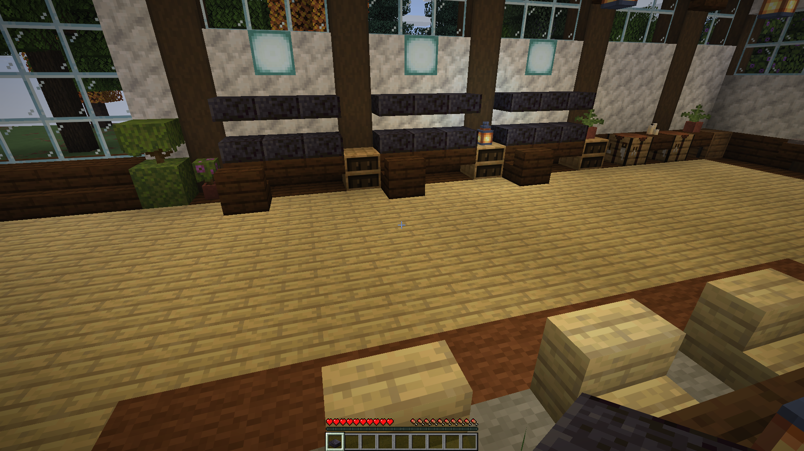
1
- Studio blocks render as vanilla equivalents
Guests cannot submit coding prompts
The vanilla guest tried /agentcraft ask and received the owner-only
rejection. Foreman readback remained at zero goals and zero tasks. Normal
Minecraft chat remains available.
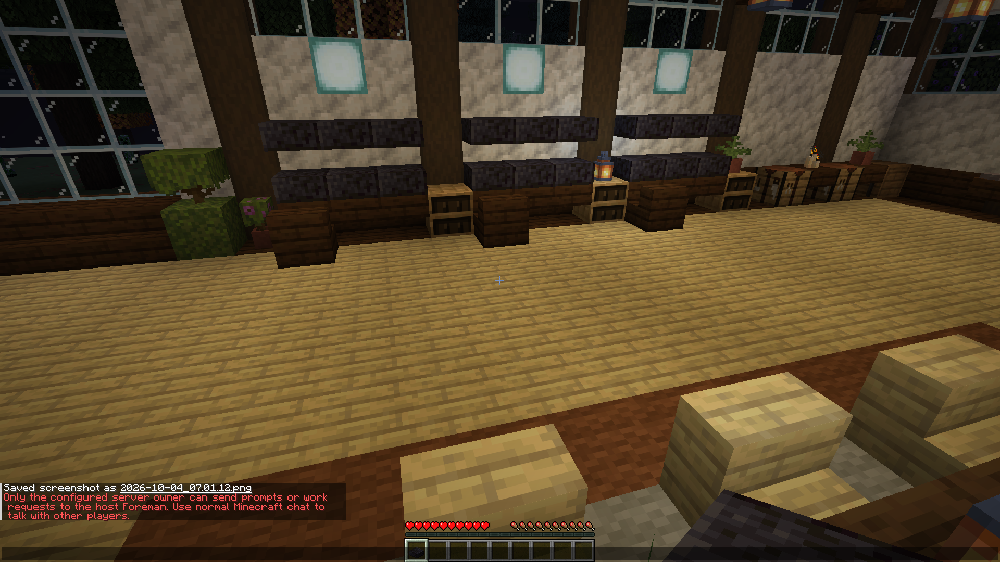
1
- Owner-only prompt rejection
Recovery controls remain available after a failed turn
An isolated Codex process was deliberately interrupted during QA. Marlow
reports the failed turn and keeps Message and Model available. Native
keyboard shortcuts were verified; physical mouse automation remains
unverified.
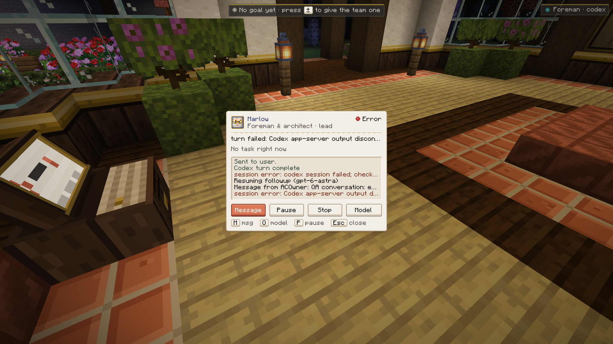
1
- Failed turn with visible Message and Model controls
Model opens from a failed agent card
Pressing the displayed O shortcut on the failed-turn card opened the model
catalog. The saved Astra/medium selection remained visible.
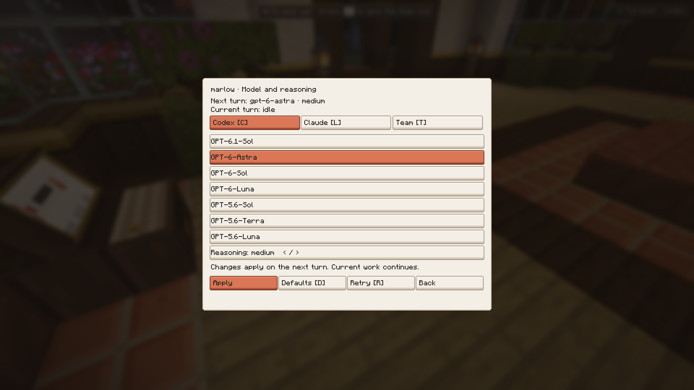
1
- Model selector available after the error
A new message recovers the conversation
From the same failed card, M opened the addressed console. The owner sent
a recovery check and Marlow replied RECOVERED. Foreman remained
authenticated with zero goals and tasks; no game or server restart was
needed for this recovery.
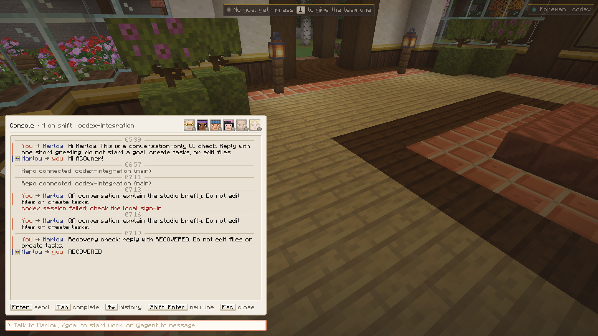
1
- Successful reply after interruption